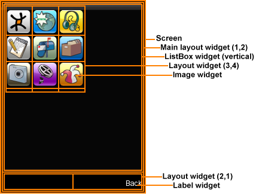

This tutorial introduces the MoSync API for User Interfaces (MAUI). It describes how to use the MAUI library classes to build screens and widgets and how to extend the MAUI model with your own custom components.
MAUI is the collection of user interface components that you can use in your own applications. It is quite possible to create an entire mobile application in MoSync without them, but they provide a lot of basic functionality, and if you make use of them you can save a lot of time. The MAUI model is extendible, and you can create your own components in it.
MAUI is a general-purpose UI framework that helps you develop usable, attractive, responsive user interfaces with a consistent look and feel across all the platforms and devices that MoSync supports. It draws inspiration from popular modern user interface frameworks like Windows Forms, Java SWING and QT, and is designed with the peculiarities and limitations of mobile devices very much in mind.
MoSync comes with an example application called MAUIex which has a lot of useful code that you can copy into your own application.
The fundamental building blocks of MAUI interfaces are screens and widgets.
Screens represent a particular instances of the application's user interface, a whole screen display. A screen is typically associated with a specific activity — like logging in, or browsing a list of albums, or viewing the description of a shopping item. Screens are essentially different logical locations in your application that the user can navigate between to perform different tasks.
To use the MAUI Screen class in your application you need to include the header file:
#include <MAUI/Screen.h>
There is no inherent hierarchy or other relationship between individual screens, although one can be implied or even enforced at the application level. Some screens may be considered side-by-side "siblings" of other screens, others have a hierarchical parent-child relationship.
To show a particular screen (and send all other screens to the background) you use the class's show method. There is also a corresponding hide method.
Screens are containers for widgets. There is always a main widget, which is resized to match the screen resolution of the device. To set the main widget, you use the setMain method, and to get it you use getMain.
The MAUI Screen class implements a number of useful event listeners so that you can detect UI events including key presses and pointer movements.
Every user interface element in MAUI is a widget. Each widget performs a common GUI task. Examples include:
All widgets are direct or indirect subclasses of the base class MAUI::Widget . To use a MAUI widget class in your application you need to include the appropriate header file, for example, if you want to use labels:
#include <MAUI/Label.h>
A widget can be a container for other widgets. For instance, if you want an image with text overlaid, you can create an Image widget, and then set the Image to be the parent of a Label widget. When a parent widget is destroyed, all of its children are destroyed as well.
The UI of a screen is built by creating a hierarchy of widgets.
There is a widget called Layout that can be used to define a grid in which to arrange other widgets, and a widget called ListBox that can be used to make a horizontal or vertical list of widgets. Both ListBox and Layout are designed solely to be containers of other widgets. Others widgets, like Label will be more or less successful containers depending on how you employ them.
A good example of how the Label and ListBox widgets work together can be found in the MAUIex example application that comes with MoSync. Here we can see a typical hierarchy of Layout and ListBox widgets arranging one of that application's screens:

Each screen has a main widget which covers the entire physical screen — in this case it is a Layout widget with one column and two rows: the top row is the main application area, the bottom row is being used to display navigation buttons ("Back"). Inside the main layout widget is a ListBox widget, which allows for vertical scrolling of the main application area.
You can define the size and background colours of widgets, and they are skinnable. When you create a widget, you specify its size, its position and its parent:
Widget* widget = new Widget(0, 0, 240, 320, NULL);
The standard constructor for a widget is new Widget(x position, y position, width, height, parent widget).
On a mobile device, the x and y positions are often less useful than you might imagine. In reality you may find that you do almost all of your positioning through Layout and ListBox widgets, and by setting the padding properties of the widgets with methods like w->setPaddingBottom(5); which will put a margin against the bottom of that widget.
Some standard methods of widgets set the background colour of the widget, and whether it should draw a background at all.
// Set the widget background colour to a dark green widget->setBackgroundColor(0x30A030); // Ensure the widget is drawing a background colour widget ->setDrawBackground(true);
Sometimes you want it to draw a background, and sometimes you don’t. With the widgets here, a dark green background is added to them rather than a skin. However, if you put a layout over an image you want to use as the background, then you need to set setDrawBackground(false) to ensure the layout doesn’t paint over my image where you don’t want it to.
There are a lot of different screen sizes around now. It used to be that there were two or three common sizes which virtually all phones shared. Now, with so many different aspect ratios it is almost impossible to predict what the screen size and shape will be.
However, it is easy to query a device's screen size from within your application using the maGetScrSize() function:
// Returns size of the screen to screenSize. MAExtent screenSize = maGetScrSize(); // Returns width of the screen to scrWidth. int scrWidth = EXTENT_X(screenSize); // Returns height of the screen to scrHeight. int scrHeight = EXTENT_Y(screenSize);
This will give you the height and width of the screen in pixels. To know whether the screen is in landscape or portrait mode, you need to test the sizes:
// If Width is greater than Height of the screen, the screen
// is in Landscape mode otherwise in portrait mode.
if(scrWidth > scrHeight)
{
// Landscape mode
}
else
{
// Portrait mode
}
If you want a widget to be a quarter of the screen size, then you can specify it as:
Widget* alertLabel = new Label(0, 0, scrWidth / 2, scrHeight / 2, NULL);
At the heart of the MAUI model is the Moblet. This is the event-based platform which all MAUI applications are based on. When your application starts, it is the moblet which runs first. The moblet will create (at least) the first screen of your application and show it. The moblet is also responsible for closing your application down, and managing system events. Some events it passes to screens automatically, for instance key presses or screen touches. Other events occur and the moblet may need code to inform your screens of the event, like getting a new location from GPS.
If you create a new MAUI project (see the tutorial on starting a new MAUI project to do this), then you get some standard code. We’ve added some additional comments to it below.
#include <MAUtil/Moblet.h>
#include <MAUI/Screen.h>
#include <MAUI/Label.h>
using namespace MAUtil;
using namespace MAUI;
// This is the Screen class. This is what you'll see displayed on your phone. It inherits
// from MAUI::Screen base class. To put content on the screen, you have to add widgets to it.
class MyScreen : public Screen
{
public:
MyScreen()
{
/*
* todo: initialize the widget hierarchy of this screen and possibly show it
* example:
* Label* l = new Label(0, 0, 50, 50, NULL, "", 0x1f7f1f, NULL);
* setMain(l);
*/
}
virtual ~MyScreen()
{
// todo: delete main widget of this screen
}
private:
};
// This is the Moblet class. This manages the events your application will need, like getting
// key presses and screen touches.
// It also creates an instance of the MAUI::Screen class 'MyScreen', and shows it on screen.
class MAUIMoblet : public Moblet
{
public:
MAUIMoblet()
{
// initialize
screen = new MyScreen();
screen->show();
}
void keyPressEvent(int keyCode)
{
// todo: handle key presses
}
void keyReleaseEvent(int keyCode)
{
// todo: handle key releases
}
MyScreen* screen;
virtual ~MAUIMoblet()
{
delete screen;
}
};
/* This is where your application starts. It creates a new instance of MAUIMoblet (see above)
* and runs it.
*/
extern "C" int MAMain()
{
Moblet::run(new MAUIMoblet());
return 0;
}
You may want to make changes to this when you start a new project. Firstly, you may want screen definitions in their own files, so delete the MyScreen class here, and create it elsewhere. Secondly, Moblet automatically passes key and screen events to my screens, so you don’t need the additional methods here. They would be useful if you wanted to capture screen presses when you’ve not got a screen displayed, or for a button which you can use on every screen, but for your applications you may prefer to handle it screen by screen.
Some developers also don’t start with a Screen, but with their own class of ScreenController. ( This will be the topic of another tutorial. In this example, we're going to show a screen instead.)
#include <MAUtil/Moblet.h>
#include "Screens/Menu.h"
using namespace MAUtil;
using namespace MAUI;
// This is the Moblet class. This manages the events your application will need, like getting
// key presses and screen touches.
// It also creates an instance of the MAUI::Screen class 'Menu', and shows it on screen.
class MAUIMoblet : public Moblet
{
public:
MAUIMoblet()
{
// initialize
menu = new Menu();
menu->show();
}
Menu* menu;
virtual ~MAUIMoblet()
{
delete menu;
}
};
/* This is where your application starts. It creates a new instance of MAUIMoblet (see above)
* and runs it.
*/
extern "C" int MAMain()
{
Moblet::run(new MAUIMoblet());
return 0;
}
Much smaller, this is the basic code that you need to start your application.
The Screen is the main unit of the application. A screen is a container for Widgets, and contains the code to process interaction with the user. The different types of Widget are explained below, but here is some boiler plate code that can be used as templates when you're creating new Screens.
We’re going to look at creating Widgets shortly, but you can use code similar to that you’ll find in the MAUIex example supplied with MoSync. That has some small factory methods which return you the widgets, rather than duplicating code in every screen.
Menu.h
/*
* @file: Menu.h
* @Author: Naveed Asif, Niklas Nummelin
*
* Description:
*
* In this tutorial we will learn how to create a
* menu using Screen, Main Layout, and Labels.
*
* (Util.h, Util.cpp) files and (background_tile_sel.png,
* background_tile_unsel.png) images, and (pretty.mof) font
* can be found in MAUIEx example.
*/
#ifndef _Menu_H_
#define _Menu_H_
#include <MAUI/Screen.h>
#include <MAUI/Layout.h>
#include <MAUI/ListBox.h>
#include <MAUI/Label.h>
#include <MAUI/Engine.h>
#include <MAUI/Font.h>
#include <MAUtil/Moblet.h>
#include "MAHeaders.h"
using namespace MAUI;
using namespace MAUtil;
Widget* createSoftKeyBar(int height, char *left, char *right);
/*
* MainScreen Class definition.
*/
class MainScreen : public Screen
{
public:
// Constructor for the MainScreen class
MainScreen();
// The destructor.
virtual ~MainScreen();
void keyPressEvent(int keyCode, int nativeCode);
void pointerPressEvent(MAPoint2d point);
void pointerReleaseEvent(MAPoint2d point);
private:
ListBox* listBox;
Layout* layout;
Widget *softKeys;
};
/*
* MyMoblet class definition.
*/
class MyMoblet : public Moblet
{
public:
MyMoblet();
void keyPressEvent(int keyCode, int nativeCode);
void keyReleaseEvent(int keyCode, int nativeCode);
void closeEvent();
private:
Screen* mainScreen;
};
#endif /* _Menu_H_ */
This header file defines a new class called ‘Menu’, inheriting from ‘Screen’. For the screen to capture button presses and respond, the method keyPressEvent must be implemented, and there is reference to a ListBox widget called mContentBox.
Menu.cpp
/*
* @File: Menu.cpp
* @Author: Naveed Asif, Niklas Nummelin
*
* Here we include the header file Menu.h
* The Util.h header file contains many useful
* functions for working with widgets.
*/
#include "Menu.h"
#include "Util.h"
/*
* An object of MyMoblet class is created.
*/
MyMoblet* moblet;
/*
* The MainScreen class is defined here.
*/
MainScreen::MainScreen()
{
// The main layout
layout = createMainLayout("", "Exit");
// This will create the list box widget that has
// 3 Labels as its children.
listBox = (ListBox*) layout->getChildren()[0];
listBox->add(createLabel("Label"));
listBox->add(createLabel("Another Label"));
listBox->add(createLabel("Yet another Label"));
// Softkeys will generate soft key bar Exit button
// using create main layout.
softKeys = layout->getChildren()[1];
// Sets the layout as main widget for this screen. The widget will
// be resized to match the screen resolution of the device.
this->setMain(layout);
}
/*
* The desctutor for MainScreen
*/
MainScreen::~MainScreen()
{
delete layout;
}
/*
* This will handle key press events.
*/
void MainScreen::keyPressEvent(int keyCode, int nativeCode)
{
switch(keyCode)
{
case MAK_UP:
listBox->selectPreviousItem();
break;
case MAK_DOWN:
listBox->selectNextItem();
break;
case MAK_SOFTRIGHT:
moblet->closeEvent();
moblet->close();
break;
}
}
/*
* Pointer press events.
*/
void MainScreen::pointerPressEvent(MAPoint2d point)
{
Point p;
p.set(point.x, point.y);
if(listBox->contains(p))
{
for(int i = 0; i < listBox->getChildren().size(); i++)
{
if(listBox->getChildren()[i]->contains(p))
{
int index = listBox->getSelectedIndex();
if(index == i)
{
keyPressEvent(MAK_FIRE, 0);
}
else
{
listBox->setSelectedIndex(i);
}
break;
}
}
}
else if(softKeys->contains(p))
{
if(softKeys->getChildren()[0]->contains(p))
{
keyPressEvent(MAK_SOFTLEFT, 0);
}
else if(softKeys->getChildren()[1]->contains(p))
{
keyPressEvent(MAK_SOFTRIGHT, 0);
}
}
}
/*
* Todo: Pointer release event for Screen.
*
*/
void MainScreen::pointerReleaseEvent(MAPoint2d point)
{
}
/*
* Todo: Key press event for moblet.
*/
void MyMoblet::keyPressEvent(int keyCode, int nativeCode)
{
}
/*
* Key release event for moblet.
*/
void MyMoblet::keyReleaseEvent(int keyCode, int nativeCode)
{
}
/*
* This event is fired at application exit.
*/
void MyMoblet::closeEvent()
{
// do destruction here
delete mainScreen;
}
/*
* MyMoblet class declaration.
*/
MyMoblet::MyMoblet()
{
// The default font and skins are declared.
gFont = new MAUI::Font(RES_FONT);
gSkin = new WidgetSkin(RES_SELECTED, RES_UNSELECTED, 16, 32, 16, 32, true, true);
// Returns a reference to the single instance of
// Engine class, using lazy initialization.
Engine& engine = Engine::getSingleton();
engine.setDefaultFont(gFont);
engine.setDefaultSkin(gSkin);
// This returns screen coordinates.
MAExtent screenSize = maGetScrSize();
scrWidth = EXTENT_X(screenSize);
scrHeight = EXTENT_Y(screenSize);
// Creates a new instance of the main screen.
mainScreen = new MainScreen();
mainScreen->show();
}
/**
* Main function that starts the program.
*/
extern "C" int MAMain()
{
moblet = new MyMoblet();
MyMoblet::run(moblet);
return 0;
}
The constructor calls the factory method to get a basic screen layout. It then creates Label widgets with the menu options.
(Every screen must have one, and only one, main widget. This is considered to be the main widget, and it will be resized to the whole of the screen. Screens cannot have areas which do not have widgets.)
You don’t have to explicitly destroy the widgets you’ve created for this screen. They will be deleted when the screen is disposed if they have been added as children to the screen.
The moblet traps key presses and screen touches, and passes them automatically to the screen which is being displayed. The only thing you need to do as a programmer to get these is to implement the virtual functions keyPressEvent, keyReleaseEvent, pointerPressEvent, pointerMoveEvent and pointerReleaseEvent. In this example, we want to navigate the menu when a button is pressed, so we can capture the keyPressEvent. The method is passed an int, which represents a key. These are mapped to a series of constants.
Probably the most basic widget, the Label will put some text on screen.
Label* myLabel = new Label(0, 0, scrWidth, scrHeight, NULL, "My Label", 0xFFC0C0, myFont);
Label has the standard Widget constructor as described above, but you can also call it a caption to display, the background colour as hex and a font. To use the default font, you have to do it the long way.
Label* myLabel = new Label(0, 0, scrWidth, scrHeight, NULL);
myLabel->setCaption("My label");
By default, labels will only display the first line of the caption. It won’t wrap around onto the next line automatically. You can set it to do this with:
myLabel->setMultiLine(true);
You can also let the label decide how much space it needs. You can specify exactly how big you want the label to be, but you can also let it stretch automatically vertically and horizontally. Generally, you may find that you don’t want to let it resize horizontally, but you do vertically.
// Allow the label to resize vertically automatically. label->setAutoSizeY(true); // Prevent the label from resizing horizontally automatically. label->setAutoSizeX(false);
An image will let you put a picture in your application. These are used frequently as buttons. Creating them is very simple. In addition to the default Widget constructor, there is
// Create a new Image object based on the PNG file in the resources. Image* image = new Image(0, 0, 100, 100, listbox, true, true, IMAGE);
Where the last three arguments are to automatically resize automatically horizontally, resize automatically vertically and the MAHandle of the image resource. By setting the resize arguments as above, you can use this command to create any image you want and it will be the correct size for the image. If you set the resize arguments to false, it does not resize the image. If the sizes you’ve specified are too small, it will crop from the centre of the image. If the sizes are too large, it will show the background colour, if it has been set. This image has been cropped.
If you want to show a border on the image, you can use the padding as described earlier. If you’ve got it automatically resizing, you won’t see the entire image. This is because the widget has sized to dimensions of the image, but then the padding will eat some of that space.
// Create a new Image object based on the PNG file in the resources. Image* image = new Image(0, 0, 150, 150, listbox, true, true, IMAGE); image->setPaddingTop(10); image->setPaddingLeft(10);
This image has padding set.
You can animate images by listening for timer events, and changing the MAHandle of the resource you are using. See the tutorial on resource files for more on this.
The layout widget does not display much in its own right, but it will organise your widgets on screen for you. You can specify a grid into which widgets will be placed. They will be added from top left to bottom right. Don’t confuse this too much with an HTML table. There are some similarities, but the Layout does not give you all the options an HTML table will.
When you create a layout, you specify the number of rows and columns you want.
Layout *mainLayout = new Layout(0, 0, scrWidth, scrHeight, NULL, 1, 2);
In this example, we’ve got one column and two rows, so we can have two widgets, arranged vertically. You cannot add more widgets than you’ve specified space for. It will not automatically grow as you add more. Use a ListBox if you want to do that. If you have more than one column, then horizontal space is allocated evenly between them. You cannot have one column which is narrower than another. Each widget can be given the right amount of space vertically though, but you do have to have just one column to do it. If you have a 2x2 grid, then each cell must be the same size as its neighbour on the same row.
Any specific spacing you’ve set for widgets in a layout will be ignored. You can’t offset a widget within its own cell. You have to make that widget larger if you want it to appear with a border, so the first two arguments when creating a child for a widget can be ignored.
The ListBox is probably the single most useful widget in the standard collection. It is like a Layout, but with two key differences. Firstly, it only works in one dimension. You can have a vertical list or a horizontal list, but you can’t create a grid with it. Secondly, it expands as you put more widgets into it, so you don’t need to know how many widgets it will end up containing.
Note: Don't be tempted by the basic constructor with a ListBox as it won't be size you expect.
If you build a ListBox with the basic parameters, it won't scroll. You'll probably be looking at it wondering why it only has one item in it.
infobox = new ListBox(0, 0, scrWidth, scrHeight, layout);
You need to add all of the arguments specific to ListBox.
infobox = new ListBox(0, 0, scrWidth, scrHeight, layout,
ListBox::LBO_VERTICAL, ListBox::LBA_LINEAR, true);
You can decide whether it is going to grow vertically or horizontally, whether it is going to be animated, and whether it will wrap to the beginning when you get to the end. Typically, an app screen will contain a Layout with a child ListBox. In the diagram below, there is a Layout in a 1x3 grid. The widgets in the Layout have been marked.
The ListBox will not break out of its space in the layout. Should it grow longer than its space, it will scroll as items are selected in it. When a specific widget in the ListBox is selected, it will scroll so that widget is on screen. You can scroll a widget using selectNextItem() andselectPreviousItem() methods. In this example, key press on the screen has been captured, and the application is going to scroll up and down the ListBox (contentBox):
void Menu::keyPressEvent(int keycode)
{
// A full list of the key constants is available at
// http://www.mosync.com/docs/2.0b1/html/maapi_8h.html
switch(keycode)
{
case MAK_SOFTLEFT:
// Quit the application
maExit(0); // Calling the moblet to exit is the proper way
break;
case MAK_8:
case MAK_DOWN:
contentBox->selectNextItem(true); // Select the next item on the menu
break;
case MAK_2:
case MAK_UP:
contentBox->selectPreviousItem(true); // Select the previous item on the menu
break;
case MAK_5:
case MAK_FIRE:
// Decide on the action you want to perform when an option is selected.
// You can get the selected option with
// contentBox->getSelectedIndex();
break;
}
}
You can also decide whether to scroll back to the top once you go past the bottom with the option setWrapping().
An EditBox allows for text capture, so users can use their phone keypad to enter text into the application.
EditBox* editBox = new EditBox(
0, 0, scrWidth, 60, NULL, “”,
0xFFFFFF, aFont, true, true, 256,
EditBox::IM_STANDARD
);
EditBox is probably the most complicated of the standard widgets, as there are different options for capturing key presses. You don’t want navigation keys to start working when someone is trying to type their name in, so you can set the EditBox to manage its own navigation.
When it is activated, it becomes the key press listener and will get the keys entered as well as the screen. This gives you a headache when managing navigation, and you have to create a sensible approach in your application between navigating the screen, and moving the cursor around the text box.
The edit box has a cursor, but its default colour is white, so if you’ve got a white background to your edit box, then you’ll need to change the colour of the cursor with
editBox->setCursorColor(0x000000);
There are two text entry modes. You can use it capture letters, or you can set it so it only takes in numbers. The hash key (#) acts as a temporary shift, so if the user presses # and the 4, they will get an upper case G.
WidgetSkins
Most widgets can have a skin applied. This is a standard image which will be applied to the border and background of the widgets to give them a uniform look and feel. Here is a skin which is supplied in the MAUIex examples. The skin is split into a 3x3 grid, and lines have been drawn to show where the grid is defined. When it is applied to a widget, the corners stay as they are, and the other five sections are tiled to fill the required space. Whatever is in box 5 is tiled over the background of the widget. You do have to be careful with this, as nice looking gradients won’t look so nice when tiled.
To define the skin, you don’t specify the top left and bottom right corners of the center box as you might expect, but instead you specify the horizontal positions of the vertical cuts, and then the vertical positions of the horizontal cuts.
gSkin = new WidgetSkin(
RES_SELECTED, RES_UNSELECTED,
16, 32, 16, 32, true, true
);
The first two arguments are the MAHandles of the images you want to use as the skin. The first one is the skin to apply when the widget has focus (is selected), and one to use when it doesn’t have focus. You then specify the offsets of the vertical cuts, the offsets of the horizontal cuts, and whether the images you want to use contain any transparent elements (which they probably do).
Very importantly, both the selected and unselected skins must be exactly the same size. You can see here the skins being applied to EditBoxes.
The best thing about the Widget model is that it is easily extendible. There are many widgets to handle common features like softkey bars, progress bars, buttons, calendars and sliders. There will be another tutorial which will go into detail on creating your own widgets. In short, you need to inherit from Widget, and implement the drawWidget() method.
This is from the ProgressBar widget:
#ifndef _PROGRESSBAR_H_
#define _PROGRESSBAR_H_
#include <MAUI/Widget.h>
#include <MAUI/Image.h>
using namespace MAUI;
namespace DatiloUI
{
class ProgressBar : public Widget
{
public:
ProgressBar(int x, int y, int width, int height,Widget* parent = NULL);
virtual ~ProgressBar();
int getPercentage();
void setPercentage(int percentage);
void drawWidget();
void setFullImage(Handle image);
void setEmptyImage(Handle image);
private:
Handle mTileFullImage;
Handle mTileEmptyImage;
int mPercent;
void plotSection(MAPoint2d* offset, int width, Handle image);
};
};
#endif // _PROGRESSBAR_H_
The drawWidget() method is the essential one. It will be called when the screen is painted, and it must plot its contents in the confines of the widget.
Here is an extract from the drawWidget() method:
void ProgressBar::drawWidget()
{
int w = this->getWidth() - this->getPaddingLeft() - this->getPaddingRight();
int amountRemaining = (w * percent) / 100;
MAPoint2d* offset = new MAPoint2d();
Point p = this->getPaddedPosition();
Rect r = paddedBounds;
offset->x = r.x;
offset->y = r.y;
// Plot the full section
if(mTileFullImage != NULL)
{
plotSection(offset, amountRemaining, mTileFullImage);
}
else
{
// Plot a progress bar
plotBar(offset, amountRemaining);
}
if(mTileEmptyImage != NULL)
{
offset->x += amountRemaining;
plotSection(offset, w - amountRemaining, mTileFullImage);
}
delete offset;
}
You can see that in the drawWidget method, you can get the PaddedPosition of the widget. This tells you where the Widget is on screen. In the plotSection() method, you get the space you're allowed to use
void ProgressBar::plotSection(MAPoint2d* offset, int width, Handle h)
{
if(mDrawBorder)
{
plotBorder();
}
MARect* clippedImage = new MARect();
Rect r = this->getPaddedBounds();
Extent imageSize = maGetImageSize(h);
while(width > 0)
{
clippedImage->left = 0;
clippedImage->width = width > EXTENT_X(imageSize) ? EXTENT_X(imageSize) : width;
clippedImage->top = 0;
clippedImage->height = r.height > EXTENT_Y(imageSize) ? EXTENT_Y(imageSize)
: r.height;
// lprintfln("Drawing image at x:%d, y:%d", offset->x, offset->y);
Gfx_drawImageRegion(h, clippedImage, offset, 0);
offset->x += clippedImage->width;
width -= clippedImage->width;
}
delete clippedImage;
if(writePercentage)
plotPercentage();
}
The method getPaddedBounds() tells me exactly what space you're allowed to use without drawing over another widget.
Behind all of these widgets is the MAUI Engine. This is the part which you rarely have to use, but provides the functionality for getting your widgets on to the screen.
The Engine is a singleton, and you can get a reference with
Engine& eng = Engine::getSingleton();
The Engine can let you specify default fonts and WidgetSkins, so you don’t need to specify them each time you use them. They will be automatically applied to your widgets. How cool is that?
eng.setDefaultFont(standardFont); eng.setDefaultSkin(standardSkin);
Set up the font and the skins, and apply them to the default methods above.